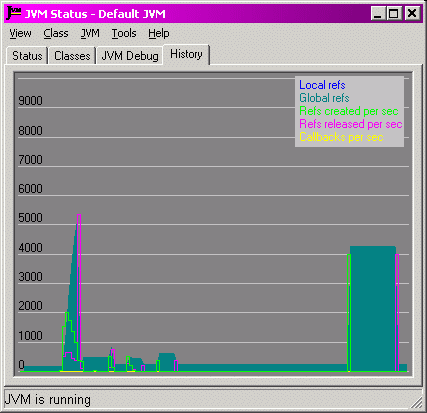

|
Overview
Contents
Players
Layers
Examples
Configuration
InFAQ
Changes
Licence
Back to Goodies
|
The Status Monitor's History Page
The History Page is a plug-in page for the Status
Monitor that displays a histogram of JNIPort activity.

The graph is updated at intervals controlled by the 'View⇒Update interval⇒'
sub-menu (which is initially set from the JVM's #statusMonitorSettings
configuration settings). The traces are labelled by the “legend” (which can be turned off
from the View menu), they are:
- Local refs (solid blue)
The number of “local” references to Java objects that were wrapped by JNIPort
objects at the sampling time.
- Global refs (solid dark green)
The number of “global” references to Java objects that were wrapped by JNIPort
objects at the sampling time.
The distinction between local and global is an internal matter (reflecting
one of the odd features of JNI). Local references
are not used at all if JNIPort has been configured to support
callbacks.
- Refs created per sec (light green line)
The rate at which JNIPort wrapped references to Java objects over the period since the
previous sampling time.
- Refs released per sec (pink line)
The rate at which JNIPort discarded and released references to Java objects over the
period since the previous sampling time. (Since references are released by finalisation,
this is a measure of how much work JNIPort is giving the finaliser to do.)
- Callbacks per sec (yellow line)
The rate at which JNIPort serviced callbacks over the
period since the previous sampling time.
|